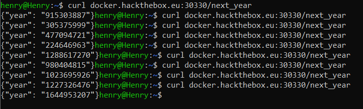
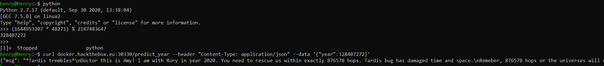
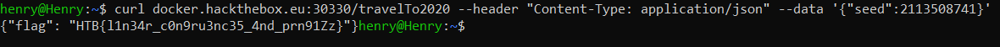

Buggy Time Machine
We are given the code to a random number generator (RNG) and the goal is to determine the internal state of the RNG so that we provide it with a seed such that it will produce a given output (2020) - doing so gives us the flag!
import os
from datetime import datetime
from flask import Flask, render_template
from flask import request
import random
from math import gcd
import json
from secret import flag, hops, msg
class TimeMachineCore:
n = ...
m = ...
c = ...
def __init__(self, seed):
self.year = seed
def next(self):
self.year = (self.year * self.m + self.c) % self.n
return self.year
app = Flask(__name__)
a = datetime.now()
seed = int(a.strftime('%Y%m%d')) <<1337 % random.getrandbits(128)
gen = TimeMachineCore(seed)
@app.route('/next_year')
def next_year():
return json.dumps({'year':str(gen.next())})
@app.route('/predict_year', methods = ['POST'])
def predict_year():
prediction = request.json['year']
try:
if prediction ==gen.next():
return json.dumps({'msg': msg})
else:
return json.dumps({'fail': 'wrong year'})
except:
return json.dumps({'error': 'year not found in keys.'})
@app.route('/travelTo2020', methods = ['POST'])
def travelTo2020():
seed = request.json['seed']
gen = TimeMachineCore(seed)
for i in range(hops): state = gen.next()
if state == 2020:
return json.dumps({'flag': flag})
@app.route('/')
def home():
return render_template('index.html')
if __name__ == '__main__':
app.run(debug=True)
From the code, we can determine the it uses a Linear congruential generator (LCG), which is known to be weak; this uses a multiplier (m), addition (c) and modular value (n) to compute the next state, given the previous state. Given a couple of outputs, we can determine these values using the script from here.

def gcd(a,b):
c = 1
a,b = max(a,b),min(a,b)
while c != 0:
c = a%b
a,b = b,c
return a
def egcd(a, b):
if a == 0:
return (b, 0, 1)
else:
g, x, y = egcd(b % a, a)
return (g, y - (b // a) * x, x)
def modinv(b, n):
g, x, _ = egcd(b, n)
if g == 1:
return x % n
def crack_unknown_increment(states, modulus, multiplier):
increment = (states[1] - states[0]*multiplier) % modulus
return modulus, multiplier, increment
def crack_unknown_multiplier(states, modulus):
multiplier = (states[2] - states[1]) * modinv(states[1] - states[0], modulus) % modulus
return crack_unknown_increment(states, modulus, multiplier)
def crack_unknown_modulus(states):
diffs = [s1 - s0 for s0, s1 in zip(states, states[1:])]
zeroes = [t2*t0 - t1*t1 for t0, t1, t2 in zip(diffs, diffs[1:], diffs[2:])]
modulus = abs(reduce(gcd, zeroes))
return crack_unknown_multiplier(states, modulus)
print(crack_unknown_modulus([1747796932, 1863148530, 1575038917, 1340007766, 1307424946, 460150330, 493218509]))
We can then run this, and it will determine the values used in the internal state of the LCG for m, c, and n in the format (m, n, c):
henry@Henry:~$ python2 determine_state.py
(2147483647, 48271, 0)
We can then use these values to predict the next value, and then submit this to the /predict_year endpoint, which should then give us a message.

We now have to find out the initial seed that will produce the value 2020 on the 876578'th hop. Easy.
We first need to find the modular inverse given the number we multiply the value with and the value we take the modulo of: 42871 and 2147483647.
In [3]: def egcd(a, b):
...: x,y, u,v = 0,1, 1,0
...: while a != 0:
...: q, r = b//a, b%a
...: m, n = x-u*q, y-v*q
...: b,a, x,y, u,v = a,r, u,v, m,n
...: gcd = b
...: return gcd, x, y
...:
In [4]: (gcd, ainv, y) = egcd(48271, 2147483647
In [6]: ainv
Out[6]: -247665088
We can now use this value to go from 2020 back to the original seed needed to reach 2020 on the 876578'th hop.
>>> end = 2020
>>> seed = 2020
>>> for _ in range(0, 876578):
... seed = (seed * -247665088) % 2147483647
...
>>> seed
2113508741
This is the original seed we need to use to get to 2020. If we submit this to the /travelTo2020 endpoint, we should get the flag.

The flag is HTB{l1n34r_c0n9ru3nc35_4nd_prn91Zz}